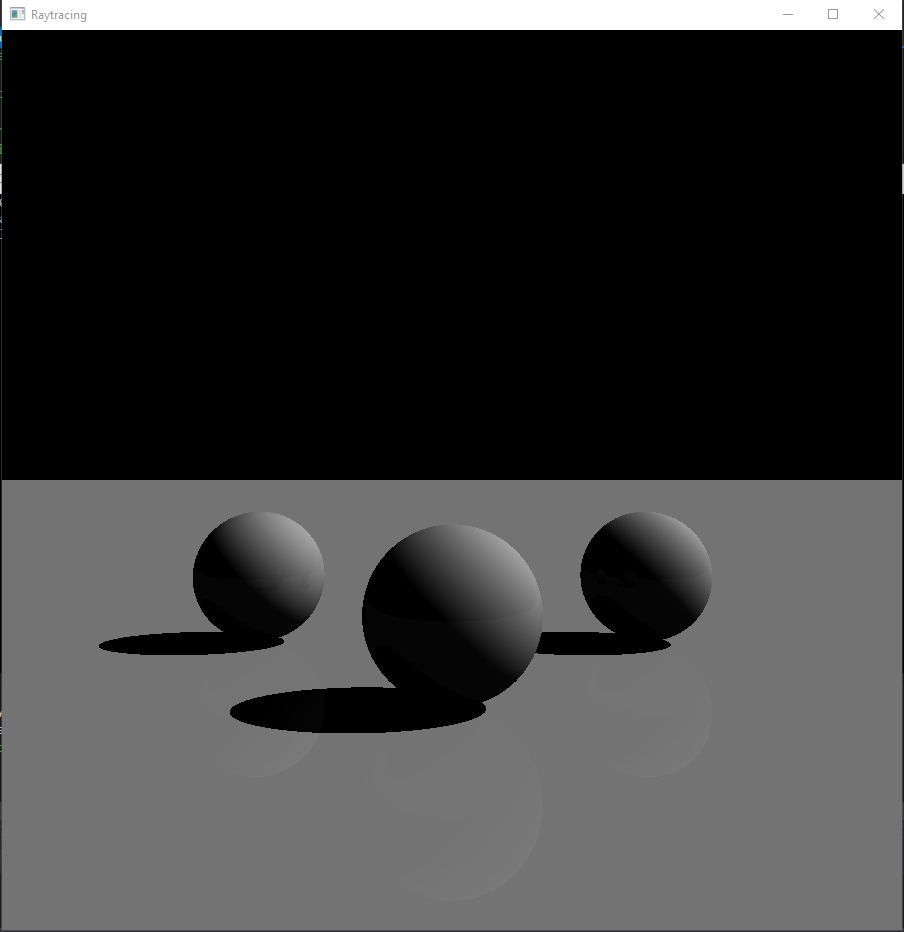
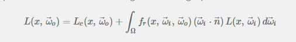

Introduction
Raytracing is an advanced and computing-intensive method of generating graphics. Unlike traditional methods of generating objects in 3D space, this method can yield much more accurate and realistic results with
the caviat of extremely high processing requirement. While the type of raytracing we have made is only suitable for still objects due to rendering times, some versions of ray tracing or pseudo raytracing exist that
can be used for realtime simulations.
Initial Construction
We can start from the basics. Raytracing, in short, is the method of casting rays at each individual pixel on a 'screen' in front of a scene of objects in the hopes of it hitting an object. If it does, it retrieves
the 'data' of the point of the object it hit and using that prints out a specific color on the screen. This is done for every single pixel present on screen.
The result is therefore extremely accurate but incredibly time-wasting.
 This is a simple enough strategy to start off with. The complexity comes in the data required for the color of each pixel. The first issue is to detect whether a ray is actually hitting an object. This problem is solved
using standard matrix geometrical calculations based on the normal of a triangle, which most objects are made out of. Of course, customized algorithms for different types of solids can be made similarly.
Now this process becomes extremely intensive very quickly and will take too long per frame to render, so a way out of this predicament is to split the work into multiple threads. A compute shader can accomplish This
but dividing up and workspace into multiple work groups based on your graphics card and work on each one in seperate threads. This speeds up the process exponentially and eases up the work done by the CPU in calculations.
A compute shader is fairly simple to set up, and for the purposes of OpenGL, we make a quad texture that covers the entire window onto which a texture is rendered and the compute shader draws pixels onto the texture
mentioned.
This is a simple enough strategy to start off with. The complexity comes in the data required for the color of each pixel. The first issue is to detect whether a ray is actually hitting an object. This problem is solved
using standard matrix geometrical calculations based on the normal of a triangle, which most objects are made out of. Of course, customized algorithms for different types of solids can be made similarly.
Now this process becomes extremely intensive very quickly and will take too long per frame to render, so a way out of this predicament is to split the work into multiple threads. A compute shader can accomplish This
but dividing up and workspace into multiple work groups based on your graphics card and work on each one in seperate threads. This speeds up the process exponentially and eases up the work done by the CPU in calculations.
A compute shader is fairly simple to set up, and for the purposes of OpenGL, we make a quad texture that covers the entire window onto which a texture is rendered and the compute shader draws pixels onto the texture
mentioned.
Now, we can process some basic lighting, which can be as simple as checking for light bouncing off an object. If we were to process every light ray emitted from a light source and check for objects it hit it would be too much even for a compute shader to process, so a workaround is to process light in the opposite direction, i.e from the camera eye to the light source. By checking the angle between a light ray and the ray we use to trace objects we can achieve some sort of primitive lighting.
Besides this, we can add a 'skybox', which is a bounding box around a scene that appears to the viewer as the sky and background. Essentially, it is an arbitrarily large cube containing a warped texture or image to simulate atmosphere.
Diagrammatic representation of raytracing
Drawing a basic sphere with only hit detection; Background for display purposes
Now, we can process some basic lighting, which can be as simple as checking for light bouncing off an object. If we were to process every light ray emitted from a light source and check for objects it hit it would be too much even for a compute shader to process, so a workaround is to process light in the opposite direction, i.e from the camera eye to the light source. By checking the angle between a light ray and the ray we use to trace objects we can achieve some sort of primitive lighting.

Another task we can undertake in light bouncing. We can set up 'mirror' objects that almost purely reflect light and iteratively create origin and destination rays from one surface to another to mimic reflection. The pixel color intensity is continuously
modified by each bounce by a certain value until a 'bounce limit' is reached. We can reach some impressive results with this alone.
Primitive lighting model
Besides this, we can add a 'skybox', which is a bounding box around a scene that appears to the viewer as the sky and background. Essentially, it is an arbitrarily large cube containing a warped texture or image to simulate atmosphere.
Purely reflective spheres
Partially reflective spheres with color
Photorealistic Rendering
Now we are prepared to start presenting some photorealistic lighting methods. Normally, the lighting equation is defined as

This equation involves an integral, as well as recursion inside the said integral, which is no doubt extremely complex to calculate, especially in such tools as GLSL where recursion is not available.
Solving this iteratively is theoretically possible, and indeed we did meet halfway and try to achieve this, but this ends up being too complex of a task to achieve quickly. However, there is an easier
situation. We can apply Monte Carlo Integration to the integral, which now reduces to a simple iterative fraction addition. This can be easily achieved using Blending methods in OpenGl and varying the alpha
(or transparency) value of each pixel after each frame of iteration. Then, instead of exactly calculating every single pixel value of each farme exactly, we can instead use randomized distribution as our main crutch.
One single frame using randomized values would look horrible, but an accumulated iteration of slowly dimishing samples will drag the image into an eventually photorealistic image. This will again be quite time intensive,
but much less than the theoretical requirement.
Rendering Equation